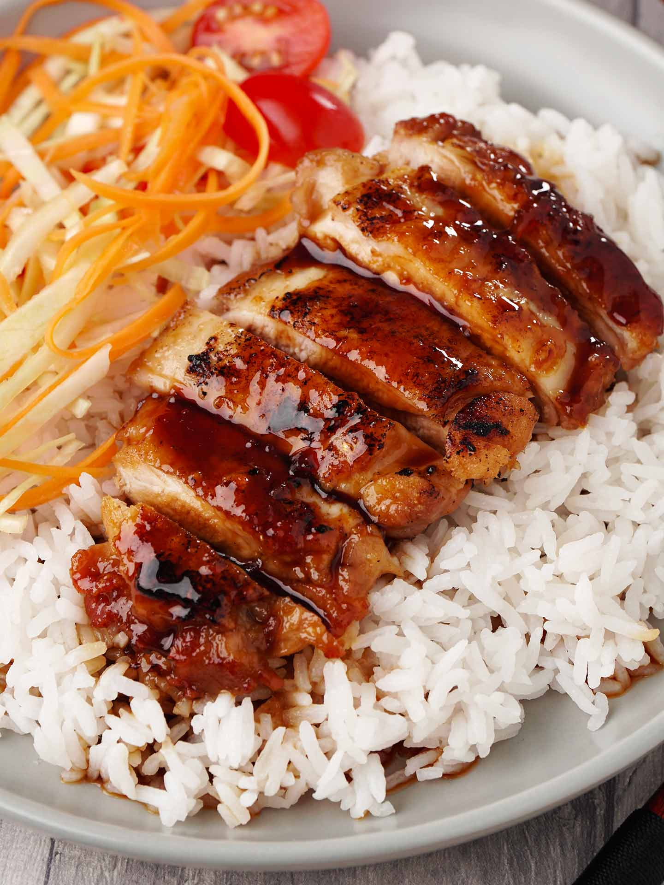

Teriyaki Chicken

I was really satisfied with this teriyaki chicken, it was easy and quick to make. You can tweak the sauce
as you please, we found it a little salty with 2 tbsp soy and 1 tbsp water so it is adjusted as you see in the recipe.
Ingredients
For Meat
- 500g chicken (cut into about an inch chunks)
- 2 tbsp sake (for steaming chicken)
For Teriyaki Sauce:
- 1 tbsp sugar
- 1 tbsp mirin
- 1 tbsp sake
- 1 1/2 tbsp soy
- 1 1/2 tbsp water
Method
- Mix teriyaki sauce and put aside for now
- Quickly sear 1 side of chiken until slightly golden
- Flip chicken and add the sake for steaming, cover with lid
- Once sake has cooked down about half, and the bottom side of chicken has some crisp, uncover and add teriyaki sauce
- Continue cooking and reduce sauce while spooning over chicken until it becomes thick
- Serve over rice with your choice of toppings (spring onions, ontama, furikake, etc.